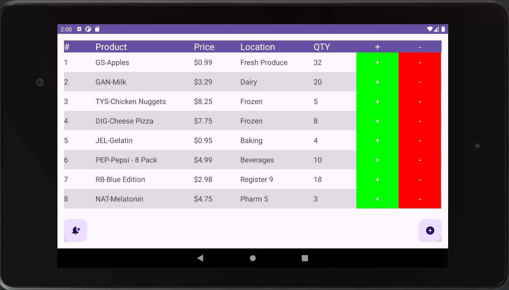

About Me

Welcome to my ePortfolio!
My name is Christopher Roelle, I am a passionate Software Engineer who loves everything
code. I enjoy finding solutions to problems, and love dabbling in automation and microcontroller development.
Self-Assessment
Throughout my academics and career, I have learned a robust set of skills and knowledge in Software Engineering. This experience spans multiple programming languages, with a primary focus on Desktop Application and Systems Development. I have learned frameworks and tools, as well as gained the confidence to pick up any new tech stack and learn it when needed for a project. I use these skills daily to develop innovative solutions for complex client needs.
Key Skills
Highlighted below are just a few of my skills:
- Software Development: I have a strong foundation in both practical and theoretical software engineering principles, using both Procedural and Object-Oriented Development Paradigms, under test-driven development.
- Programming Language Proficiencies:
- Java
- C/C++
- C#
- Python
- Batch
- Powershell
- WinSCP FTP Scripting
- SQL
- Frameworks and Tools:
- Git
- Android Studio
- Visual Studio/Code
- OpenGL Graphics Framework
- Technical Skills:
- FTP Server Management through EFT/WinSCP suites
- Microsoft SQL Database Management
- Comptia A+ Training
- Advanced Windows Operating System knowledge
This ePortfolio showcases just a few of my projects that exemplify my technical abilities and commitment to continuous enhancement of code bases.
These projects showcase my abilities to Port, Expand, Optimize, and Manage code bases as simple as a CLI app to larger Applications with many working parts like apps and graphics engines.
Each project contains a link to the original source code, the enhanced version of the codebase (with instructions), and a download for each project's narrative.
Code Review
Appointment Manager - Java to C++ Port
Originally developed in Java for Unit Testing, I ported the code to C++, and added Appointment Management Services using the CLI.

 Original Project
Original Project
C++ | OpenGL - 3D Scene
Written in C++ using the OpenGL Graphics API, this is a 3D scene completely generated programatically.

Inventorio - Inventory Management App for Android
Inventory Management for Android devices. Boasts support for low-stock notifications, product tracking, and more!
